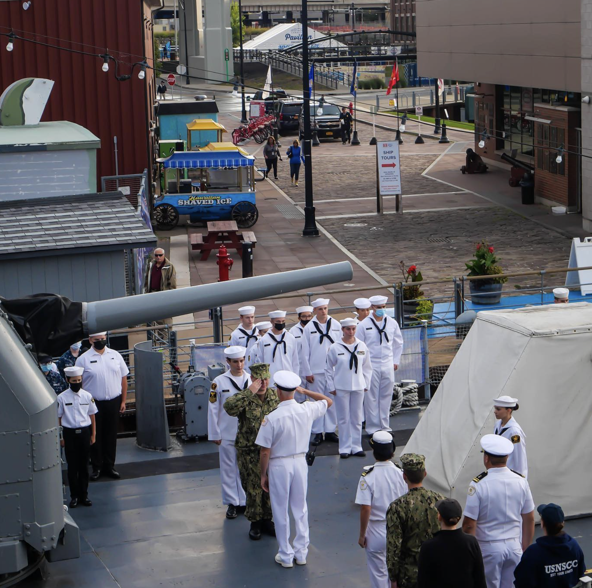
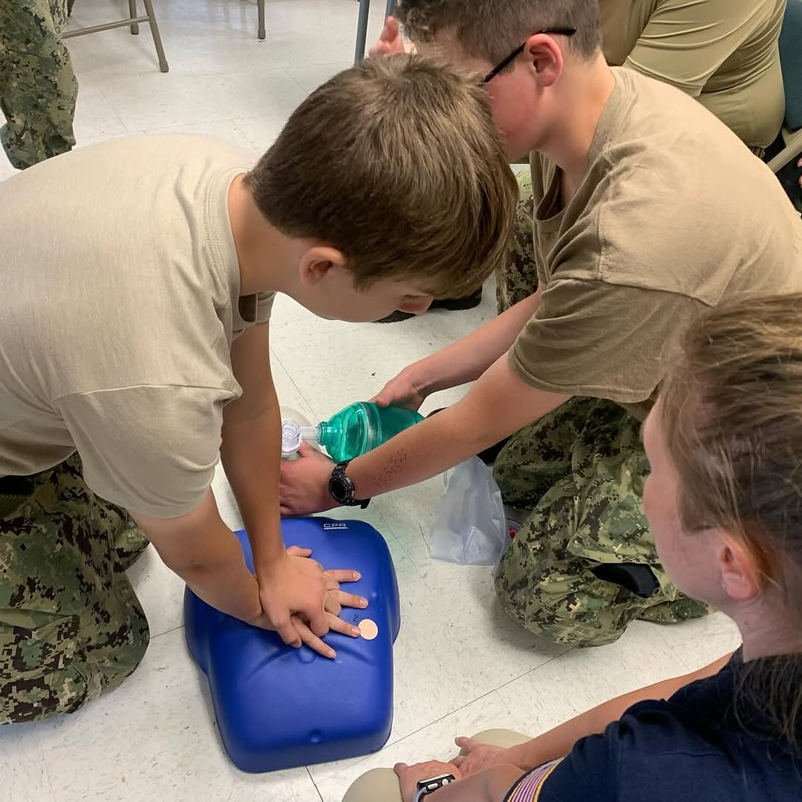

U.S. Naval Sea Cadet Corps, Buffalo, New York
Join The Sullivans Division.
A youth program for ages 10 through high school. Cadets learn seamanship, drill, first aid, and how to lead people. There is no obligation to join the military.
What parents ask first
- Does this obligate my child to join the military?
- No. The Naval Sea Cadet Corps is a congressionally chartered non-profit youth program supported by the Navy and Coast Guard. It is not enlistment, and cadets incur no service obligation. Many cadets go on to college or a civilian career. That choice stays entirely theirs.
- Who can join?
- Young people roughly ages 10 through high school. The Navy League Cadet Corps covers the younger group; the Naval Sea Cadet Corps covers the older one. If your child is under 13, a parent or guardian completes the enrollment.
- What does it cost?
- There are annual dues, and uniforms and training have costs. Ask us for the current figures before you commit to anything, and ask about assistance if cost is a barrier. We would rather answer that question honestly than surprise a family later.
- Where and when do you drill?
- The division drills in the Buffalo area. We share exact dates and the meeting location directly with families who contact us, rather than publishing a standing schedule of where a group of minors will be.

Cadets train in first aid and CPR, seamanship, drill, and physical readiness. Some attend advanced training aboard ships and at military installations over the summer.
How to enroll
Enrollment runs through the national Sea Cadets site.
Every unit in the country enrolls the same way. It takes a few minutes, and the division's recruiting team follows up with you directly.
-
Open the national enrollment page
It asks you to find a unit on a map and request information. Nothing is final at this stage.
-
Select The Sullivans Division, Buffalo NY
This is the step that matters. The map lists every unit in the region, and choosing a different one sends your request to another division instead of to us.
Look for The Sullivans Division, Buffalo NY
-
Submit the request, and we will reach out
Our recruiting team contacts you to arrange a visit to a drill so you and your child can see the program before deciding anything.
Remember to select The Sullivans Division, Buffalo NY.
Not ready to enroll yet?
Ask whatever you need to ask. Time commitment, cost, what a drill weekend actually looks like, whether it suits your child. A person from the division answers, usually within two days.
Email info@thesullivansusnscc.com